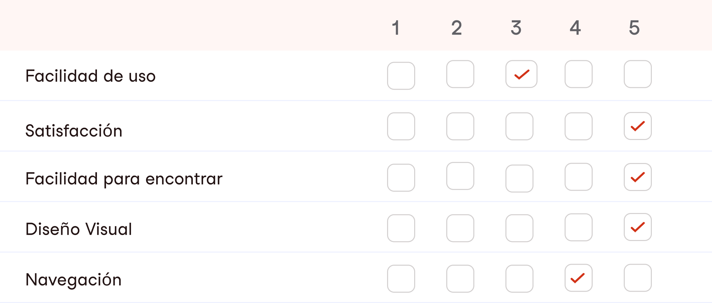

Volver
VolverEs una apliacicón android para personas de la lectura, en este mundo de los mangas historietas e ilustradas hechas en Japón u otras culturas del mundo, que ahora está creciendo con mayor atracción para los lectores y fans (como los llamados Utakus).
¿Qué buscamos?
Tanto como lectores y fans de los Mangas, buscan cambiar su modo de lectura de uso en papel al digital, otros personas buscan un producto que les de confianza en guardar colecciones, buscar mangas de sus mangakas preferidos, con esto buscan encontrar una aplicación para la necesidad de la lectura.
¿Por qué lo hicimos?
Hoy en día la era digital está presente, con mayor porcentaje de usuarios en búsqueda y descargas de aplicaciones de mangas, estás personas desean un cambio de tipo de lectura el uso de papel a una aplicación digital, encontramos muchos problemas heurísticas, que no están con el objetivo de tener un buen método UX y UI.
¿En qué nos Enfocamos?
Para este proyecto nos enfocamos en mejorar la Accesibilidad, Navegación, Diseño de Interfaz y Usabilidad.
Mi Proceso Creativo
- 1.- Investigación
- 2.- Análisis
- 3.- Diseño
- 4.- Prototipo
- 5.- Testear
01. Investigación
Desktop Research
El objetivo de este proyecto es rediseñar esta App, usuarios de mas de 70% en latino america que son lectores y seguidores de la cultura japonesa, dado con está con más descargas en android han encontrado un mayor problema con la Usabilidad, Navegación, entre otros con poca estrategia de deseabilidad para un usuario lector de prestigio. Debido a estos problemas de usabilidad, hice mi Desktop Research con encuestás cómo hacer que la aplicación sea más accesible para los usuarios nuevos. Para que la aplicación tenga una mejora experiencia para llegar a mas usuarios y entregarles un producto accesible para los fanáticos.
¿Cómo lo Hicimos?
- +60 Reviews recogidas de Google play store de la app
- 10 Encuentas cuantitativas semi-estructuradas con preguntas abiertas y cerradas
- 15 promedio de análisis de referencia del merdaco, competencias.
benchmark
Para el rediseño del producto digital creado, analizamos una evaluación comparativa donde se puede ver la falta de jerarquía en el diseño de la interfaz. comparando con el proyecto se ha extraído sus debilidades y fortalezas, concluyendo con la idea de mejorar la interfaz y su experiencia de usuario para una mejor navegación sencilla y cómoda.

debilidades
- No permite personalizar
- Búsqueda rápida
- Falta de caegrorías
- Control de página
- Jerarquía de Diseño
- Perfil de Usuario
fortalezas
- Registro sencillo
- Series Recomendados
- Rangking
- Contenido a diario
- Notificación de capitulos nuevos
Conclusiones de la Investigación
Problemas Localizados
- Problemas de Idiomas
- Mala experiencia de usuario
- Accesibilidad
- Falta de Jerarquía
Recomendaciones
- Reducir información
- Mejorar jerarquía de tipografía
- Dar opción de cambiar idiomas
- Mejora de Usabilidad
Funciones Sugeridas
- Estilo de lectura tradicional de mangas
- Sección de manga últimos leidos
- Personalizar Biblioteca
- Notificación de recordar para seguir leyendo
Qué piensan los usuarios
- Si me gustan su trama y sus personajes
- Porque me entretienen, me divierten mucho
- Porque son un hobby y/o forma de desconectar
- Me llamaron la atencion y empeze a leer
02. Análisis
Para obtener respuestas, de un análisis y síntesis de toda información cuantitiva, he realizado un User Persona, Mapa de Empatía, Customer Journey Map, Propuesta de valor, Historia de Usuario + Jobs Storie, Mapa de sitio y User Flow.
User Persona
Mapa de Sitio
Flujo de Usuario
03. ideación
Desktop Research
Para obtener respuestas, de un análisis y síntesis de toda información cuantitiva, he realizado un User Persona, Mapa de Empatía, Customer Journey Map, Propuesta de valor, Historia de Usuario + Jobs Storie, Mapa de sitio y User Flow.
Wireframe
Moodboard
Tipografía
Author
Aa
Aa Bb Cc Dd Ee Ff Gg Hh Ii Jj Kk Ll Mm Nn Oo Pp Qq Rr Ss Tt Uu Vv Ww Xx Yy Zz
1 2 3 4 5 6 7 8 9 0
- Light
- Regular
- Medium
- Semibold
- Bold
Color
- Color Negro
- Hex:#1C1919
- RGB:28 25 25
- Color Rojo
- Hex:#4D459C
- RGB:210 50 23
íconos
Componentes
Diseño Visual
Variedad de publicación de mangas y capítulos nuevos todos los días
El usuario puede hacer los ajustes personalizando el modo oscuro y notificaciones para el modo lectura
Personalizar el modo de lectura para los usuarios normales o fans que leen tradicional japones
El usuario accederá de manera rápidamente sin necesidad de buscar nuevamente
04. Testeo
Pruebas de Usabilidad
Para este proceso realicé junté 4 personas planteando las tareas a realizar para nuestra prueba de prototipo en prueba de baja calidad y alta calidad. Dado a las tareas realizadas que participaron los usuarios, nos permitió obtener un producto deseable.
Objetivos
- Detectar problemas en la navegación o flujo propuesto
- Comprobar y validar el flujo de navegación
- Conseguir feedback posibles usuarios de la app
- Detectar errores graves que puedan hacer fracasar el proyecto
- Medir el tiempo que se tarda en completar cada tarea
Métricas
Lo que funcionó
El objetivo era que los usuarios navegaran sin problemas, el resultado fue funcional y sencilla.
Lo que no funcionó
Considerar de claridad con los íconos, en agregar como el ícono de descarga, mejorando la barra de navegación.
Mejorado
Mejorar el contraste de los botones modales.
Conclusión
Durante el viaje del proyecto, aprendí a mejorar de principio a fin los aspectos de rediseñar y mejorar el producto digital, mediante la metodología Desan Thinking, comenzando desde la etapa de investigar los puntos de dolores de los usuarios y comprender cual es el objetivo en esta aplicación, siguiendo el proceso en prototipar las pantallas, obteniendo resultados a favor. Hay camino para seguir aprendiendo y mejorando en UX/UI.